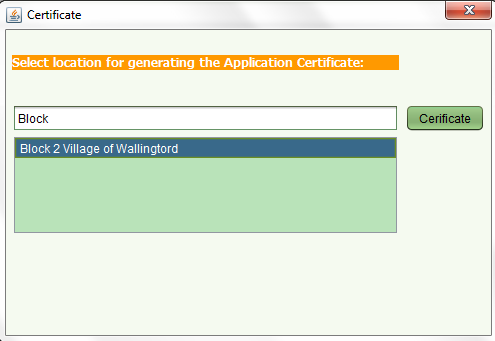

Prepare Registration Certificates
This functionality allows you to print registration certificates for all parcels
within a block of a systematic registration area where the claim for systematic registration
has been upheld and the claim application approved
Steps
-
From the Dashboard form on the main menu bar click on the Systematic Registration – Certificate menu option.
- Enter the name of the Block in the Location field. As you type the block name, the names
of the blocks subject to systematic registration will appear in a list below in a “google search” like fashion.
When the name of the Block that you need to create a public notification listing appears in that list then
select that row and click on the View button.
- The certificates are stored in the SOLA digital archive and can be retrieved by a regular Document search
using the new title reference (being <>_<> as the reference number
and title as document type

Also See